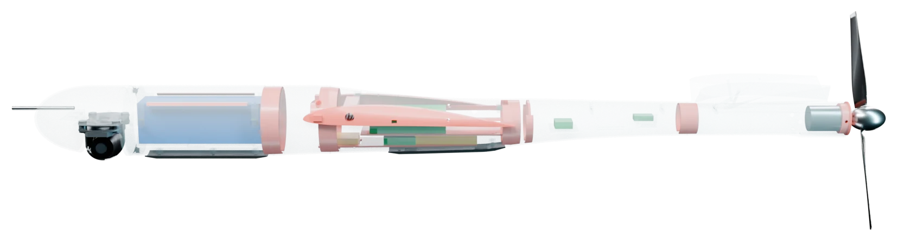

Where every part sits, and why
Every part is placed in the V11c CAD and checked for fit and insertion path. The cutaway shows the battery, electronics and printed structure inside the fuselage.

Six sections, each fits a 220 mm printer
PETG couplers join the sections, 10 mm into each. Two top hatches: A for the battery (120–260), B for the avionics (361–529).
| Component | Mass | x from the nose | Level | Why it sits there |
|---|---|---|---|---|
| Camera, Siyi A2 mini | 85 g | 54 to 102 mm | Nose bay, under the ceiling plate | As far forward as it goes, with a clear view down and ahead under its dome. The second-biggest weight ahead of the CG. |
| Airspeed sensor, ASPD-4525 | 8 g | 38 to 58 mm | Nose, above the camera | Right behind the pitot probe, so the pressure tubes stay short. With a pusher propeller the nose is the only clean air. |
| Battery, 4S 7000 mAh | 590 g | 120 to 258 mm | Centreline, under hatch A | A third of the total mass and the main balance adjuster. Drops in flat and slides 10 mm forward; the hatch opens with the wings on. |
| Power board, FCHUB-A | 15 g | 324 to 360 mm | Lower rack | Straight behind the battery, so the thick battery leads are as short as possible. |
| Flight controller, Matek H743 | 28 g | 364 to 418 mm | Lower rack | Next to the CG, where rotation adds the least false acceleration to its motion sensors. |
| Raspberry Pi 4 | 46 g | 371 to 456 mm | Upper rack, under hatch B | Behind the wing tube; lifts straight out when hatch B is off. |
| ESC, 60 A | 28 g | 422 to 492 mm | Lower rack | Short battery-side leads; the motor wires run aft along the floor channel. |
| 4G module, SIM7600E | 33 g | 460 to 526 mm | Upper rack | Behind the Pi for a short connection. Antennas at x 498 on both sides, away from the GPS. |
| Wing servos, 2 × SG90 | 18 g | 386 to 418 mm | In the wing, 262 mm out | In PETG frames next to the ailerons. Only their leads enter the fuselage. |
| Tail servos, 2 × SG90 | 18 g | about 554 mm | PETG bulkhead in F3 | Ahead of the boom taper, with pushrods to the ruddervator horns. |
| GPS and compass, M10Q | 8 g | 588 to 608 mm | Shelf behind the wing | Behind the carbon tube so the sky is clear, and away from the ESC, motor and 4G module because of its compass. |
| ELRS receiver, RadioMaster RP3 | about 9 g | 679 to 702 mm | Printed into F3's left wall | Two antennas in grooves 90° apart, away from carbon, the Pi, the 4G antennas and the motor leads. |
| Motor, T-Motor AT2321 | 94 g | about 875 to 909 mm | Inside the tail end | On a PETG mount that slides out aft with the motor. At least 2.6 mm clear of the wall all round. |
| Propeller, 10 in pusher | 25 g | about 930 mm | Behind the tail | Pushes from behind, so the nose and the camera view stay clear. |
| Wiring and connectors | 70 g | about 400 mm | Spread through the fuselage | Counted as one mass close to the CG. |
Positions are along the fuselage from the nose tip. The printed airframe, couplers, carbon tube and hatch magnets are part of the balance too.
An aircraft balances like a seesaw on its centre of gravity. The battery and camera at the front balance the motor, the tail and the rear half of the wing.
For stability the CG has to sit ahead of the neutral point, where the extra lift from a gust acts. Ours is at about 363 mm, about 24 mm ahead of the neutral point at 387 mm: a static margin of about 13% of the mean wing chord.
Why we stretched the fuselage instead of adding weight
The first CFD put the neutral point ahead of the CG, so V10b would have been unstable. Moving only the wing aft would have put the carbon spar through the Raspberry Pi, and a bigger tail alone reached only 4.6%. Stretching the fuselage 68 mm behind the battery moved the wing, tail and motor aft together and gave 13.7% with no ballast.
In V11c we checked every joint, screw, insert and insertion path in exact CAD geometry, not just whether the parts overlap when assembled.
Battery would not go in
The 126 mm opening was too short for the 138 mm pack.
Wings stopped short with a hatch closed
The trailing-edge rod crossed hatch B's seam.
Ailerons hit the wing
Trailing edge up touched at 15 to 20°.
Parts that could not be fitted
Two couplers and the spar carrier met narrowing sections or ridges.
Screws bottomed out
Several screws were too long to clamp.
Motor: 2.9 to 3.0 mm radial gap to the tail wall. All part pairs: zero overlap in exact geometry.
The skins are LW-PLA; anything that carries load or takes a screw is PETG.
- Electronics: two separate PETG racks. The lower rack holds the power board, flight controller and ESC; the upper one the Raspberry Pi 4 and 4G module, on M2.5 screws.
- Joints: PETG couplers bonded 10 mm into each fuselage section, with a floor channel for the motor leads.
- Wing: PETG root ribs with a tube sleeve, the spar carrier in two halves, PETG servo frames in the wing pockets.
- Hinges and skids: TPU flex hinges on the ailerons and ruddervators; TPU landing skids screwed into heat-set inserts.
- Fixings: heat-set inserts only in PETG; LW-PLA is too soft around screws.


Neither aircraft has flown yet. Figures are design estimates from CFD and calculation, not flight-test data.